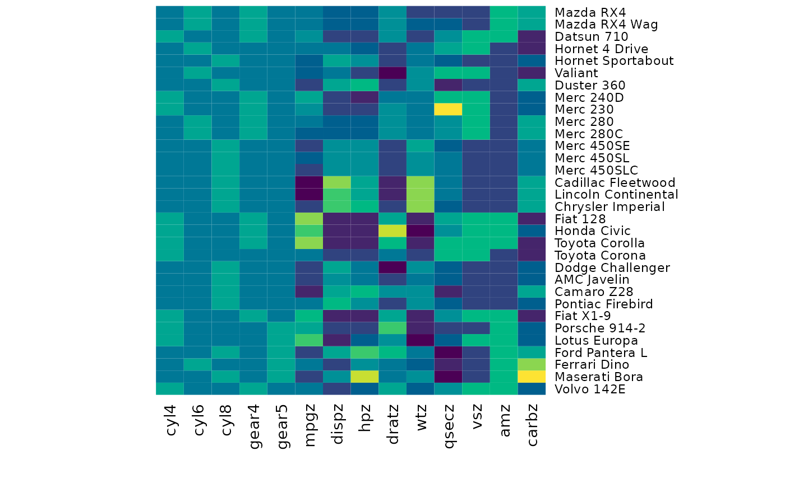

Leveraging R’s power of making models, we can create a QDEC file from a model formula and a data frame. The function relies on the correct setup of data (categoricals as factors etc), which you would normally do in R.
First, we prepare a data.frame. We will use the mtcars
data to imagine what we want to do. We will make sure to convert the
cyl and gear columns to factors, to prepare
ourselves for how to deal with categorical variables in the qdec
file.
cars <- mtcars
cars$cyl <- factor(cars$cyl)
cars$gear <- factor(cars$gear)
cars
#> mpg cyl disp hp drat wt qsec vs am gear carb
#> Mazda RX4 21.0 6 160.0 110 3.90 2.620 16.46 0 1 4 4
#> Mazda RX4 Wag 21.0 6 160.0 110 3.90 2.875 17.02 0 1 4 4
#> Datsun 710 22.8 4 108.0 93 3.85 2.320 18.61 1 1 4 1
#> Hornet 4 Drive 21.4 6 258.0 110 3.08 3.215 19.44 1 0 3 1
#> Hornet Sportabout 18.7 8 360.0 175 3.15 3.440 17.02 0 0 3 2
#> Valiant 18.1 6 225.0 105 2.76 3.460 20.22 1 0 3 1
#> Duster 360 14.3 8 360.0 245 3.21 3.570 15.84 0 0 3 4
#> Merc 240D 24.4 4 146.7 62 3.69 3.190 20.00 1 0 4 2
#> Merc 230 22.8 4 140.8 95 3.92 3.150 22.90 1 0 4 2
#> [ reached 'max' / getOption("max.print") -- omitted 23 rows ]The model formula
To create a qdec object, we use the make_fs_qdec
function, with a formula and the data. The formula decides what
variables the qdec file will contain, and will binarise the levels of
factors, and scale continuous variables so they have a mean of 0 and a
standard deviation of 1. Make sure to include -1 to remove
intercept, which would make sure that factors have all levels
represented in the qdec file.
make_fs_qdec(cars, mpg ~ -1 + cyl + hp)
#> cyl4 cyl6 cyl8 mpgz dispz hpz dratz
#> Mazda RX4 0 1 0 0.1508848 -0.57061982 -0.5350928 0.5675137
#> Mazda RX4 Wag 0 1 0 0.1508848 -0.57061982 -0.5350928 0.5675137
#> Datsun 710 1 0 0 0.4495434 -0.99018209 -0.7830405 0.4739996
#> Hornet 4 Drive 0 1 0 0.2172534 0.22009369 -0.5350928 -0.9661175
#> Hornet Sportabout 0 0 1 -0.2307345 1.04308123 0.4129422 -0.8351978
#> Valiant 0 1 0 -0.3302874 -0.04616698 -0.6080186 -1.5646078
#> Duster 360 0 0 1 -0.9607889 1.04308123 1.4339030 -0.7229809
#> Merc 240D 1 0 0 0.7150178 -0.67793094 -1.2351802 0.1747545
#> wtz qsecz vsz amz carbz
#> Mazda RX4 -0.610399567 -0.7771651 -0.8680278 1.1899014 0.7352031
#> Mazda RX4 Wag -0.349785269 -0.4637808 -0.8680278 1.1899014 0.7352031
#> Datsun 710 -0.917004624 0.4260068 1.1160357 1.1899014 -1.1221521
#> Hornet 4 Drive -0.002299538 0.8904872 1.1160357 -0.8141431 -1.1221521
#> Hornet Sportabout 0.227654255 -0.4637808 -0.8680278 -0.8141431 -0.5030337
#> Valiant 0.248094592 1.3269868 1.1160357 -0.8141431 -1.1221521
#> Duster 360 0.360516446 -1.1241264 -0.8680278 -0.8141431 0.7352031
#> Merc 240D -0.027849959 1.2038715 1.1160357 -0.8141431 -0.5030337
#> [ reached 'max' / getOption("max.print") -- omitted 24 rows ]If you do not include -1, the model will not expose all
levels of factors, but capture the first levels of each factor in the
Intercept which will consist of only the value
1.
make_fs_qdec(cars, mpg ~ cyl + hp)
#> (Intercept) cyl6 cyl8 mpgz dispz hpz
#> Mazda RX4 1 1 0 0.1508848 -0.57061982 -0.5350928
#> Mazda RX4 Wag 1 1 0 0.1508848 -0.57061982 -0.5350928
#> Datsun 710 1 0 0 0.4495434 -0.99018209 -0.7830405
#> Hornet 4 Drive 1 1 0 0.2172534 0.22009369 -0.5350928
#> Hornet Sportabout 1 0 1 -0.2307345 1.04308123 0.4129422
#> Valiant 1 1 0 -0.3302874 -0.04616698 -0.6080186
#> Duster 360 1 0 1 -0.9607889 1.04308123 1.4339030
#> Merc 240D 1 0 0 0.7150178 -0.67793094 -1.2351802
#> dratz wtz qsecz vsz amz
#> Mazda RX4 0.5675137 -0.610399567 -0.7771651 -0.8680278 1.1899014
#> Mazda RX4 Wag 0.5675137 -0.349785269 -0.4637808 -0.8680278 1.1899014
#> Datsun 710 0.4739996 -0.917004624 0.4260068 1.1160357 1.1899014
#> Hornet 4 Drive -0.9661175 -0.002299538 0.8904872 1.1160357 -0.8141431
#> Hornet Sportabout -0.8351978 0.227654255 -0.4637808 -0.8680278 -0.8141431
#> Valiant -1.5646078 0.248094592 1.3269868 1.1160357 -0.8141431
#> Duster 360 -0.7229809 0.360516446 -1.1241264 -0.8680278 -0.8141431
#> Merc 240D 0.1747545 -0.027849959 1.2038715 1.1160357 -0.8141431
#> carbz
#> Mazda RX4 0.7352031
#> Mazda RX4 Wag 0.7352031
#> Datsun 710 -1.1221521
#> Hornet 4 Drive -1.1221521
#> Hornet Sportabout -0.5030337
#> Valiant -1.1221521
#> Duster 360 0.7352031
#> Merc 240D -0.5030337
#> [ reached 'max' / getOption("max.print") -- omitted 24 rows ]-1 makes sure you get a qdec as expected from the Freesurfer
documentation
Keeping original data
You can keep the original data in the qdec file by using the
keep argument. This is useful if you want to keep the
original data for reference, or if you want to use the qdec file for
other purposes than just running a model. By default, keep
is FALSE, and by switching to TRUE you keep
the original data of the columns in your model.
make_fs_qdec(cars, mpg ~ -1 + cyl + hp, keep = TRUE)
#> cyl4 cyl6 cyl8 mpgz dispz hpz dratz
#> Mazda RX4 0 1 0 0.1508848 -0.57061982 -0.5350928 0.5675137
#> Mazda RX4 Wag 0 1 0 0.1508848 -0.57061982 -0.5350928 0.5675137
#> Datsun 710 1 0 0 0.4495434 -0.99018209 -0.7830405 0.4739996
#> Hornet 4 Drive 0 1 0 0.2172534 0.22009369 -0.5350928 -0.9661175
#> Hornet Sportabout 0 0 1 -0.2307345 1.04308123 0.4129422 -0.8351978
#> Valiant 0 1 0 -0.3302874 -0.04616698 -0.6080186 -1.5646078
#> wtz qsecz vsz amz carbz mpg
#> Mazda RX4 -0.610399567 -0.7771651 -0.8680278 1.1899014 0.7352031 21.0
#> Mazda RX4 Wag -0.349785269 -0.4637808 -0.8680278 1.1899014 0.7352031 21.0
#> Datsun 710 -0.917004624 0.4260068 1.1160357 1.1899014 -1.1221521 22.8
#> Hornet 4 Drive -0.002299538 0.8904872 1.1160357 -0.8141431 -1.1221521 21.4
#> Hornet Sportabout 0.227654255 -0.4637808 -0.8680278 -0.8141431 -0.5030337 18.7
#> Valiant 0.248094592 1.3269868 1.1160357 -0.8141431 -1.1221521 18.1
#> cyl hp
#> Mazda RX4 6 110
#> Mazda RX4 Wag 6 110
#> Datsun 710 4 93
#> Hornet 4 Drive 6 110
#> Hornet Sportabout 8 175
#> Valiant 6 105
#> [ reached 'max' / getOption("max.print") -- omitted 26 rows ]It is recommended that you also have the base-id’s of the data in
their own column, which you can also request to have in the qdec by
using the id-column’s name in the keep argument.
cars$type <- row.names(cars)
make_fs_qdec(cars,
mpg ~ -1 + cyl + hp + gear,
keep = "type")
#> cyl4 cyl6 cyl8 gear4 gear5 mpgz dispz hpz
#> Mazda RX4 0 1 0 1 0 0.1508848 -0.57061982 -0.5350928
#> Mazda RX4 Wag 0 1 0 1 0 0.1508848 -0.57061982 -0.5350928
#> Datsun 710 1 0 0 1 0 0.4495434 -0.99018209 -0.7830405
#> Hornet 4 Drive 0 1 0 0 0 0.2172534 0.22009369 -0.5350928
#> Hornet Sportabout 0 0 1 0 0 -0.2307345 1.04308123 0.4129422
#> Valiant 0 1 0 0 0 -0.3302874 -0.04616698 -0.6080186
#> dratz wtz qsecz vsz amz
#> Mazda RX4 0.5675137 -0.610399567 -0.7771651 -0.8680278 1.1899014
#> Mazda RX4 Wag 0.5675137 -0.349785269 -0.4637808 -0.8680278 1.1899014
#> Datsun 710 0.4739996 -0.917004624 0.4260068 1.1160357 1.1899014
#> Hornet 4 Drive -0.9661175 -0.002299538 0.8904872 1.1160357 -0.8141431
#> Hornet Sportabout -0.8351978 0.227654255 -0.4637808 -0.8680278 -0.8141431
#> Valiant -1.5646078 0.248094592 1.3269868 1.1160357 -0.8141431
#> carbz type
#> Mazda RX4 0.7352031 Mazda RX4
#> Mazda RX4 Wag 0.7352031 Mazda RX4 Wag
#> Datsun 710 -1.1221521 Datsun 710
#> Hornet 4 Drive -1.1221521 Hornet 4 Drive
#> Hornet Sportabout -0.5030337 Hornet Sportabout
#> Valiant -1.1221521 Valiant
#> [ reached 'max' / getOption("max.print") -- omitted 26 rows ]This can also be a character vector, and let’s you specify which columns to keep.
cars$type <- row.names(cars)
make_fs_qdec(
cars,
mpg ~ -1 + cyl + hp + gear,
keep = c("type", "mpg", "cyl", "hp")
)
#> cyl4 cyl6 cyl8 gear4 gear5 mpgz dispz hpz
#> Mazda RX4 0 1 0 1 0 0.1508848 -0.5706198 -0.5350928
#> Mazda RX4 Wag 0 1 0 1 0 0.1508848 -0.5706198 -0.5350928
#> Datsun 710 1 0 0 1 0 0.4495434 -0.9901821 -0.7830405
#> Hornet 4 Drive 0 1 0 0 0 0.2172534 0.2200937 -0.5350928
#> Hornet Sportabout 0 0 1 0 0 -0.2307345 1.0430812 0.4129422
#> dratz wtz qsecz vsz amz
#> Mazda RX4 0.5675137 -0.610399567 -0.7771651 -0.8680278 1.1899014
#> Mazda RX4 Wag 0.5675137 -0.349785269 -0.4637808 -0.8680278 1.1899014
#> Datsun 710 0.4739996 -0.917004624 0.4260068 1.1160357 1.1899014
#> Hornet 4 Drive -0.9661175 -0.002299538 0.8904872 1.1160357 -0.8141431
#> Hornet Sportabout -0.8351978 0.227654255 -0.4637808 -0.8680278 -0.8141431
#> carbz type mpg cyl hp
#> Mazda RX4 0.7352031 Mazda RX4 21.0 6 110
#> Mazda RX4 Wag 0.7352031 Mazda RX4 Wag 21.0 6 110
#> Datsun 710 -1.1221521 Datsun 710 22.8 4 93
#> Hornet 4 Drive -1.1221521 Hornet 4 Drive 21.4 6 110
#> Hornet Sportabout -0.5030337 Hornet Sportabout 18.7 8 175
#> [ reached 'max' / getOption("max.print") -- omitted 27 rows ]
# Keeping all columns
make_fs_qdec(
cars,
mpg ~ -1 + cyl + hp,
keep = names(cars))
#> cyl4 cyl6 cyl8 mpgz dispz hpz dratz
#> Mazda RX4 0 1 0 0.1508848 -0.5706198 -0.5350928 0.5675137
#> Mazda RX4 Wag 0 1 0 0.1508848 -0.5706198 -0.5350928 0.5675137
#> Datsun 710 1 0 0 0.4495434 -0.9901821 -0.7830405 0.4739996
#> Hornet 4 Drive 0 1 0 0.2172534 0.2200937 -0.5350928 -0.9661175
#> wtz qsecz vsz amz carbz mpg
#> Mazda RX4 -0.610399567 -0.7771651 -0.8680278 1.1899014 0.7352031 21.0
#> Mazda RX4 Wag -0.349785269 -0.4637808 -0.8680278 1.1899014 0.7352031 21.0
#> Datsun 710 -0.917004624 0.4260068 1.1160357 1.1899014 -1.1221521 22.8
#> Hornet 4 Drive -0.002299538 0.8904872 1.1160357 -0.8141431 -1.1221521 21.4
#> cyl disp hp drat wt qsec vs am gear carb type
#> Mazda RX4 6 160 110 3.90 2.620 16.46 0 1 4 4 Mazda RX4
#> Mazda RX4 Wag 6 160 110 3.90 2.875 17.02 0 1 4 4 Mazda RX4 Wag
#> Datsun 710 4 108 93 3.85 2.320 18.61 1 1 4 1 Datsun 710
#> Hornet 4 Drive 6 258 110 3.08 3.215 19.44 1 0 3 1 Hornet 4 Drive
#> [ reached 'max' / getOption("max.print") -- omitted 28 rows ]Plotting the qdec
Visualise the qdec file with the plot function. This is
a good way to confirm what you expect the data to look like.
qdec <- make_fs_qdec(cars,
mpg ~ -1 + cyl + hp + gear)
plot(qdec)